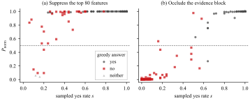
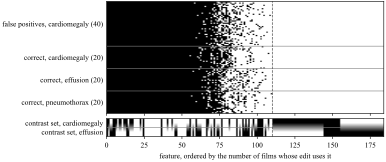

- yes
- yes, after reasoning
- other first token · neither answer
- no, after reasoning
- no
Summary
Interventions on vision–language models are commonly scored on yes/no questions by the model's first output token, often as the probability of “yes” normalized over “yes” and “no”, the probability form of the logit difference that interpretability work recommends. We show that this score can miss most of an intervention's effect on the model's written answer.
We train a transcoder for MedGemma 1.5 (4B) and use it to suppress the 80 most active features on 40 chest radiographs that the model calls positive for cardiomegaly although they are labelled negative. The normalized score barely moves, but the share of sampled answers saying yes falls.
The generated text shows why. After suppression the model more often opens with “Based on the image, …” as opposed to “Yes”, and that reasoning more often ends in “No”, but its first token almost never becomes “No”. On one radiograph:
When we instead cover the part of the image the model relies on, the first token often does become “No”, so the score sees that edit. The gap replicates on radiographs selected by their written answer alone and on correct effusion and pneumothorax calls. We hypothesize that it comes from how circuit-tracing tools apply edits, which constrain the first token but not the rest of the answer. An edit that looks inert by this score can still change what the model tells a clinician, so such interventions should be scored on sampled answers.
What we measure
We steer MedGemma 1.5-4b-it on a 4,999-image subset of NIH ChestX-ray14 (1,335 patients). Each radiograph is shown in a single turn with the question “Does this chest X-ray show cardiomegaly? Answer yes or no.” Let ℓ be the logits where the answer would begin and p their softmax. We compare three first-token readouts with the answers the model writes.
- Praw = pyes
- The probability that the next token is “yes”, taking the largest of its surface forms (yes, Yes, YES, with and without a leading space).
- Pnorm = σ(Δ)
- pyes / (pyes + pno), a sigmoid of the margin Δ = ℓyes − ℓno: the probability form of the logit difference recommended for activation patching. Unedited, the median Δ is 12.2 nats, odds of about 200,000 to 1.
- s
- The sampled yes rate: the share of 50 answers, sampled at temperature 1 for up to 128 tokens, whose first whole-word “yes” or “no” is yes. A blind hand reading agreed with this rule on 94 of 100 samples.
The main comparison uses 40 radiographs from 39 patients that the model calls positive for cardiomegaly although ChestX-ray14 labels them negative. All are anteroposterior, a projection that magnifies the heart, so it can look enlarged when it is not. Half were selected by Praw ≥ 0.5 in our pilot study; the other half by the greedy answer alone, so that no readout under test chose them. Every steering comparison compares the model with itself.
The edit, and a reference
A cross-layer transcoder reads the input to each MLP block and reconstructs the outputs of that block
and all later ones from a sparse set of features. Ours covers all 34 layers with 2,048 features per
layer. On each radiograph we pick the 80 features with the highest mean activation over the image tokens
and edit them there: scale −1 reverses their sign, scale −2 reverses and
doubles it, and ablate sets them to zero.
We apply the edit as circuit-tracing tools do. As the model reads the prompt, each MLP block keeps the output it computed on the unedited input, plus the edit's decoded change, instead of recomputing from its changed input; attention is recomputed throughout. We call this the clamp. With no edit it reproduces the model exactly.
We hypothesize that this mismatch lets the first token miss what the rest of the answer says.
To know what a readout should register, we also need an edit that changes the call by removing its evidence. MedGemma encodes each image as a 16×16 grid of tokens. We occlude one 2×2 block of that grid at a time and take the block whose occlusion most lowers the first-token readout as the film's evidence block. On all of the first 20 films it lies in the central 4×4 blocks, and on 16 in the two columns just right of the image midline, the patient's left, where most of the cardiac silhouette lies. Occlusion changes only the image, so it runs on the unedited model, with no clamp. An identical black square at a random border block leaves the answers in place.
The answers move; the score barely does
Read through Pnorm, suppression leaves the model's call nearly
unchanged: under scale −1 it moves from 0.976 to 0.933 and says no on 2 of 40 films. The
lost “yes” probability goes mostly to “Based”, and mean pno stays at
most 0.007 under every variant. Yet the sampled yes rate falls from 0.95 to 0.73.
Over the three variants (120 greedy answers, all “yes” unedited), suppression turns 32 to “no”, and Pnorm still says yes on 28 of them. The three occlusions of the evidence block turn 53 of 120 to “no”, and Pnorm still says yes on only 3, a comparison that favours the readout, since a first-token readout chose the evidence blocks.
| first token | written answer | |||||
|---|---|---|---|---|---|---|
| Intervention | Praw | Pnorm | median Δ change | below 0.5 (Praw / Pnorm) |
s | greedy no (Pnorm yes) |
| None | 0.824 | 0.976 | – | 5 / 1 | 0.95 | 0 (0) |
Suppress, scale −1 | 0.555 | 0.933 | −2.9 | 16 / 2 | 0.73 | 11 (9) |
Suppress, ablate | 0.604 | 0.952 | −2.1 | 14 / 1 | 0.74 | 12 (11) |
Suppress, scale −2 | 0.523 | 0.916 | −3.1 | 17 / 3 | 0.65 | 9 (8) |
| Evidence block, black | 0.198 | 0.261 | −14.3 | 31 / 31 | 0.29 | 28 (0) |
| Evidence block, mean fill | 0.296 | 0.469 | −9.6 | 28 / 21 | 0.44 | 21 (3) |
| Evidence block, blur | 0.677 | 0.880 | −1.1 | 12 / 5 | 0.86 | 4 (0) |
| Border block, black | 0.822 | 0.964 | +0.0 | 6 / 1 | 0.94 | 1 (0) |
By the pre-registered rule, Pnorm falls short of the drop in s by 0.18 to 0.24 under each variant, a miss under all three (misreads). On the 20 films selected by greedy answer alone, which no first-token readout chose, the gap replicates.

Two routes to the answer
Why do the written answers move when Pnorm barely does? Sorting the sampled answers by their first word shows two routes. On the direct route, the model opens with “Yes” or “No”, and almost always says yes. On the reasoning route, it opens (almost always) with “Based on the image” and concludes later. A sample opens with “Yes” with probability about Praw, so if r is the share of samples that reason first and y the share of those that conclude yes,
s ≈ Praw + r · y
Suppression changes both terms. At the first token it moves probability from “Yes” to “Based” (0.15 to 0.40), so more samples reason first (r rises from 0.18 to 0.44), and those that reason conclude yes less often (y falls from 0.73 to 0.39). Pnorm sees neither change, because it compares “yes” with “no” at the first token, and “no” gets almost no probability there. Black occlusion also sends samples to the reasoning route, but it moves the first token to “No” as well (mean pno 0.159), so Pnorm falls with the answers.
| answers directly | reasons first | |||
|---|---|---|---|---|
| Intervention | share | says yes | share (r) | says yes (y) / no / neither |
| None | 0.82 | 1.00 | 0.18 | 0.73 / 0.16 / 0.12 |
Suppress, scale −1 | 0.56 | 0.99 | 0.44 | 0.39 / 0.42 / 0.19 |
Suppress, ablate | 0.61 | 0.99 | 0.39 | 0.33 / 0.59 / 0.08 |
Suppress, scale −2 | 0.53 | 0.99 | 0.47 | 0.26 / 0.41 / 0.33 |
| Evidence block, black | 0.36 | 0.56 | 0.64 | 0.14 / 0.68 / 0.18 |
Before the sigmoid, the margin Δ does respond: its median change ranks all seven interventions in the same order as the drop in s. It starts from a median of 12.2 nats, though, and rarely crosses zero, because the “yes” probability that suppression removes goes to “Based”, which Δ ignores. Praw falls by about as much as s (0.27 against 0.22), but only by coincidence: more samples reason, but fewer of them conclude yes, and the two changes largely offset.
Is the clamp the cause?
If the clamp is why the first token misses how the reasoning ends, the first token should move with the answers once every MLP block responds. We ran two pre-registered tests on the live model, with the same films, feature sets and seeds, adding each edit's change in the transcoder's output to the model's own MLP outputs.
At the original strengths, the live edit is far stronger than the clamp and mostly stops the model from answering: 66% to 87% of samples give neither answer, so the test cannot decide. Among weaker strengths, only scaling each feature by 0.6 kept the answers moving while most samples still answered. There the first token moves with the answers: it puts 0.26 on “no”, and Pnorm and s fall by about the same amount.
This is what the hypothesis predicts, but it does not show that the clamp is the cause. The two edits are never compared at the same effect size, the interval is wider than the rule needs to call agreement, and the live edit frees the MLP blocks at the image positions as well as at the answer position. Freeing only the answer position's blocks would isolate the hypothesis, and is the natural next test.
Scope
Other findings. We repeated scale −1 and the evidence occlusion on 20
correctly called positive films for each of three findings. On pleural effusion and pneumothorax,
suppression lowers s by 0.17 and 0.21, and Pnorm
misses the effect (misreads), as on the false positives. Correct cardiomegaly calls
barely respond (s falls by 0.04), so the pre-registered test of generalisation is
inconclusive.
What the edit removes. The suppressed features are not specific to the finding. Top-activation sets built for cardiomegaly, effusion and pneumothorax from separate donor radiographs nearly coincide (mean pairwise Jaccard index 0.944, against 0.284 for sets chosen by contrast between positive and negative donors). Top activation picks what is active on any chest radiograph. The readout failure does not depend on the edit being specific.

Recommendation
When an intervention is evaluated on a closed question, score sampled answers, and report the first-token readouts and the shares of answers that reason first or give no answer alongside them. Scoring the answers would have caught both failures we saw: under the clamp, the first token missed how the reasoning ended, and under strong live edits, the readout reported a decision while the model mostly stopped answering.
The answer mass m = pyes + pno alone is not enough. It shows that the first token no longer carries most answers, but not which way they moved: it fell further under black occlusion (0.36), where Pnorm followed the answers, than under suppression (0.56). And the first token and the rest of the answer should come from one configuration, or the difference should be stated.
When the model still answers at the first token under the intervention (m near 1 after the edit), the logit difference describes the decision and remains the right tool for the patching studies it was recommended for.
Limitations
We steer one model, with one transcoder, on one dataset, with 40 false-positive and 60 true-positive radiographs. No radiologist reviewed the radiographs, labels, occlusion maps or generated text. We sample at temperature 1 without truncation, unlike a deployed model; the greedy answers tell the same story. The results show that a recommended readout can miss an intervention's effect in a realistic medical setting, and by what route, but not how often this affects published results.
Code and weights
We release the transcoder, the code for every experiment, and a result file behind every number. Every number in the paper regenerates from those files on a CPU in minutes, and CI repeats the regeneration on every push.
The transcoder
- Base model
- MedGemma 1.5-4b-it (bfloat16)
- Shape
- 34 layers × 2,048 features, full cross-layer span
- Parameters
- 3.30B trained (6.24B allocated, plus optimizer state)
- Training data
- MedGemma activations on ChestX-ray14 radiographs and, as separate inputs, CheXpert Plus report texts
- File
clt_ckpt.pt, 37,630,140,293 bytes- MD5
4c2747c75e4ce368bd48ccd194f9b8ef
CrossLayerTranscoder.load_checkpoint reads the checkpoint directly, and
scripts/export_clt_safetensors.py writes the trained parameters to a weights-only
.safetensors file.
Reproduce the paper from the result files
git clone https://github.com/kevinjin918/first-token-readouts
cd first-token-readouts
python3.11 -m venv .venv && source .venv/bin/activate
pip install -e ".[analysis,viz,dev]"
python paper/make_numbers.py # rewrites paper/numbers.tex and paper/tables/ from results/
git diff --stat paper/ # empty: every number in the paper regeneratesRerun an experiment (one 80 GB GPU)
pip install -e ".[models,data,analysis]"
python scripts/download_nih.py --sample # ChestX-ray14 images_001: 4,999 images
mkdir -p ckpt && curl -L -o ckpt/clt_ckpt.pt \
"https://zenodo.org/records/22105454/files/clt_ckpt.pt?download=1" # 37.6 GB
python scripts/readout_sampled_answers.py --ckpt ckpt/clt_ckpt.pt \
--out results/clt_scale/readout_sampled_answers.jsonMedGemma is gated on Hugging Face: accept its terms and log in first.
Citation
@inproceedings{jin2026firsttoken,
title = {When First-Token Readouts Misread Feature
Steering in a Medical Vision--Language Model},
author = {Jin, Kevin},
booktitle = {The Third Workshop on GenAI for Health: Agentic
Systems, Clinical Trust, and Future Potential
(NeurIPS 2026 Workshop)},
year = {2026}
}